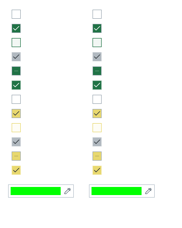

Tracefolio REPORTS & ISSUES
Tracefolio REPORTS & ISSUESDataTable 원본 컨트롤을 공통 모체로 이동·대조
완료체크박스와 색상 필드의 기존 그리기 코드를 공통 모체에 위임했습니다. 제품의 기존 입력 처리와 업무 로직은 유지했습니다.
작업 결과
체크박스와 색상 필드의 기존 그리기 코드를 공통 모체에 위임했습니다. 제품의 기존 입력 처리와 업무 로직은 유지했습니다.
변경 내용
적용 내용
체크박스와 색상 필드의 기존 그리기 코드를 공통 모체에 위임했습니다. 제품의 기존 입력 처리와 업무 로직은 유지했습니다.
교훈 검토: 내부 컨트롤의 실제 입력·선택값과 로드된 빌드를 확인하는 프로젝트 QA를 AGENTS.md에 반영했습니다. 전역은 기존 실제 원본·실행 대조 및 증거 우선 규칙과 중복되므로 변경하지 않았습니다. 신규 비트맵 디자인 없이 DataTable 원본 아이콘·그리기 코드를 재사용했습니다.
검증
원본 IMGUI 대 공통 IMGUI 13개 픽셀 비교가 모두 일치했습니다. UITK와 IMGUI의 픽셀 동일성을 주장하는 검사는 아닙니다. 현재 공유 헤더·복원 화면을 갱신했습니다. 기존 전체 문서 검사는 259건 실패로 별도 보존했습니다.

남은 사항
기존 DataTable 문서 전체 검사 259건은 미해결입니다. 이번 갱신 화면 관련 오류는 0건입니다. 다른 Unity 버전은 미검증입니다.
작업 시간
- 제안 시간: 20~40분
- 실제로 완료된 시간: 121.2분 · 구현/실행 검증 시각 2026-10-30 20:46:21 KST. 공개 배포 확인은 후속 메뉴얼에 기록.
- XERJ: 사용 — XERJ Vector3Field 검색에서 해당 Pixora 소스 누락을 확인하여 rg와 현재 소스로 보완.